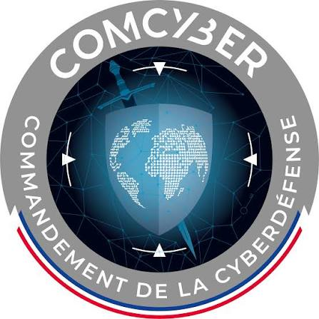
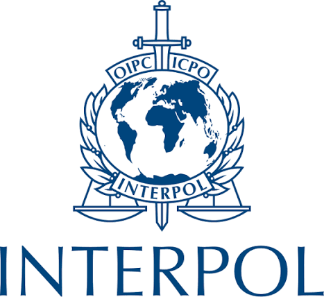

Description de mon projet professionnel
À l'issue de mon Mastère en cybersécurité, je souhaite m'orienter vers les métiers de la cyberdéfense et de la lutte contre les cybermenaces, avec pour objectif d'intégrer le Commandement de la cyberdéfense (COMCYBER) des armées françaises ou, à terme, le pôle spécialisé dans la cybercriminalité d'INTERPOL. Je souhaite mettre mes compétences techniques au service de la protection des systèmes d'information sensibles, de l'analyse des cybermenaces, du renseignement cyber et de la réponse aux incidents de sécurité. Mon ambition est de participer à la détection et à l'investigation des cyberattaques, à l'identification des acteurs malveillants ainsi qu'à la protection des intérêts stratégiques français et internationaux. À travers ce projet, je souhaite exercer un métier à forte responsabilité, alliant expertise technique, rigueur, discrétion et engagement. Mon objectif est de contribuer concrètement à la sécurité du cyberespace, que ce soit dans un cadre militaire ou dans celui de la coopération policière internationale.